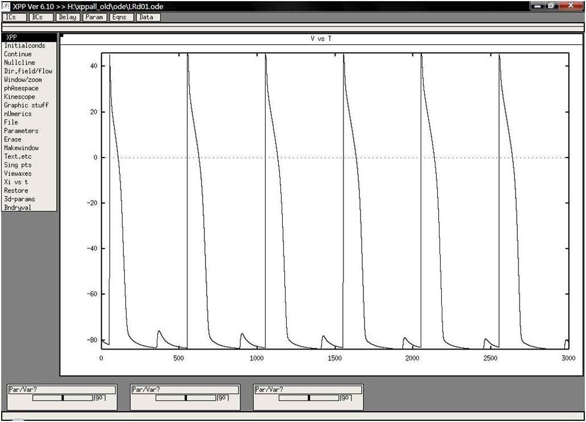

This is the readme.txt for the model associated with the paper (1) Wang YJ, Sung RJ, Lin MW, Wu SN. Contribution of BK(Ca)-channel activity in human cardiac fibroblasts to electrical coupling of cardiomyocytes- fibroblasts. J Membr Biol 2006;213:175-185. (2) Luo CH, Rudy Y. A dynamic model of the cardiac ventricular action potential. II. Afterdepolarizations, triggered activity, and potentiation. Circ Res 1994;74:1097-1113. Abstract: Cardiac fibroblasts are involved in the maintenance of myocardial tissue structure. However, little is known about ion currents in human cardiac fibroblasts. It has been recently reported that cardiac fibroblasts can interact electrically with cardiomyocytes through gap junctions. Ca(2+)- activated K(+) currents (I (K[Ca])) of cultured human cardiac fibroblasts were characterized in this study. In whole-cell configuration, depolarizing pulses evoked I (K(Ca)) in an outward rectification in these cells, the amplitude of which was suppressed by paxilline (1 microM) or iberiotoxin (200 nM). A large-conductance, Ca(2+)-activated K(+) (BK(Ca)) channel with single-channel conductance of 162 +/- 8 pS was also observed in human cardiac fibroblasts. Western blot analysis revealed the presence of alpha- subunit of BK(Ca) channels. The dynamic Luo-Rudy model was applied to predict cell behavior during direct electrical coupling of cardiomyocytes and cardiac fibroblasts. In the simulation, electrically coupled cardiac fibroblasts also exhibited action potential; however, they were electrically inert with no gap-junctional coupling. The simulation predicts that changes in gap junction coupling conductance can influence the configuration of cardiac action potential and cardiomyocyte excitability. I(K(Ca)) can be elicited by simulated action potential waveforms of cardiac fibroblasts when they are electrically coupled to cardiomyocytes. This study demonstrates that a BK(Ca) channel is functionally expressed in human cardiac fibroblasts. The activity of these BK(Ca) channels present in human cardiac fibroblasts may contribute to the functional activities of heart cells through transfer of electrical signals between these two cell types. ------- To run the models: XPP: start with the command xpp ode\LRd01.ode To press (I)nitial and (L)ast 3-4 times, then change parameter (Par) period from 200 to 500 msec. Delayed after-depolarization shown in attached figure along with triggered activity will emerge. An author supplied image of the model run:  Bard Ermentrout's website http://www.pitt.edu/~phase/ describes how to get and use xpp. These model files were submitted by: Sheng-Nan Wu Department of Physiology National Cheng Kung University Medical College Tainan City 70101, Taiwan snwu@mail.ncku.edu.tw